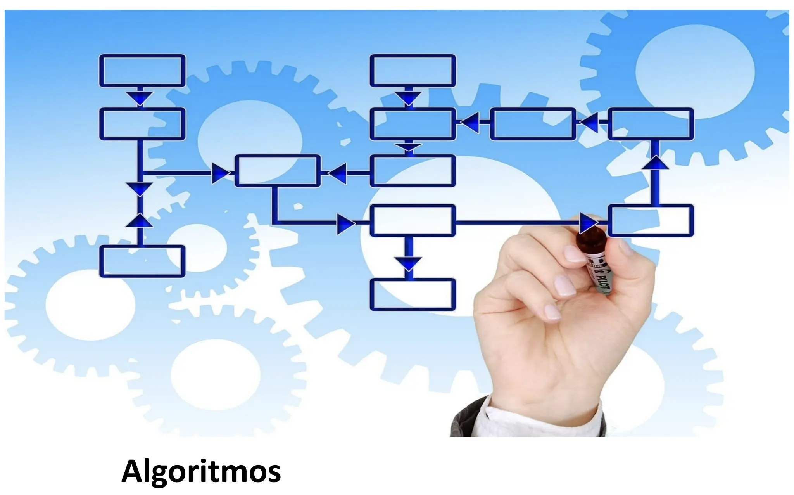

Conclusión
Reflexión Final
A lo largo de este portafolio se exploraron múltiples áreas fundamentales en el desarrollo lógico, la programación, las máquinas virtuales y las bases de datos. Cada sección representa un aprendizaje teórico y práctico que fortalece el pensamiento crítico y la resolución de problemas.
Este sitio no solo resume los conocimientos adquiridos durante el curso, sino que también demuestra la capacidad de integrar información técnica en un proyecto web, aplicando organización, diseño y claridad en la presentación.
El desarrollo de este portafolio refuerza la importancia del aprendizaje continuo en el mundo tecnológico, donde cada concepto sirve como base para futuros retos y oportunidades.